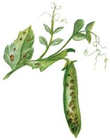
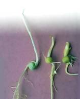

Болезни гороха

Бобовые растения, больше чем все остальные, нуждаются в защите от болезней, поскольку дают не только пищу с ценными белковыми соединениями, но и обогащают почву азотом, на что не способны представители других семейств растительного мира. Бобовые культуры нуждаются в защите от аскхитоза, приносящего огромный ущерб зеленому горошку и всему семеноводству гороха. Горох поражается и ложной мучнистой росой, распространяющейся во влажные периоды, а в засушливые годы – корневыми гнилями и обычной мучнистой росой.
Фасоль особенно страдает от антракноза, бактериоза и различных вирусных инфекций.
Ложная мучнистая роса (пероноспороз)Эта болезнь возникает главным образом в периоды высокой влажности. Она поражает молодые и взрослые растения, образуя многочисленные желтые пятна на листьях. На всходах пятна покрывают семядоли.
На нижней стороне листьев налет приобретает серо-фиолетовый оттенок. Пораженные листья засыхают и опадают. Горох перестает наращивать зеленую массу.
Меры борьбы
При обнаружении первых признаков инфекции опрыскивайте растения 1 %-ной бордоской жидкостью.
Проводите заготовку только здоровых семян. Ранние посевы, отсутствие затенения, своевременные прополки, внедрение ранне-спелых сортов, подбор участков, продуваемых ветром, – все это важнейшие и безвредные в экологическом плане мероприятия.
АскохитозЭто опасное грибковое заболевание, поражающее все органы гороха. Молодые растения гибнут сразу; на взрослых частичная гибель приводит к заметной изреженности посевов.
Симптомы аскохитоза – появление серых пятен на листьях, сухие пятна окружаются бурыми точками с черными размывами. На стеблях пятна въедаются глубоко, образуя язвочки.
Сходные симптомы обнаруживаются и на стручках: пятна нарастают, гриб проникает в семена.
Зараженные во время обмолота семена утрачивают жизнеспособность и всхожесть.
Меры борьбы
Не превышайте дозы калия и азота на участке с бобовыми культурами. Отбирайте для выращивания сравнительно устойчивые к аскохитозу сорта гороха: Виола, Штамбовый полукарлик, Рекорд 158, Штамбовый мозговой, Ранний консервный, Победитель Г-33. На прежнее место горох можно возвращать только через 3–4 года.
При инфицировании аскохитозом проведите опрыскивание хлорокисью меди в концентрации 0,4 %.
Больные стебли после уборки урожая следует глубоко зарыть или сжечь.
Корневая гниль горохаБолезнь вызывает активно размножающийся гриб. Симптомы проявляются в виде побурения корневой ш ейки и нижней части стебля у самой земли с последующим увяданием всего растения. Корневая система растения становится рыхлой, темнеет и разрушается, что напоминает поражение черной ножкой. Такое заболевшее растение легко извлекается из почвы.
На почвах с избытком калия аскохитоз развивается очень активно, особенно если при этом летом часто выпадают осадки и влажность воздуха высокая.

Растение, поврежденное аскохитозом
Меры борьбы
Горох можно возвращать на прежнее место посадок не ранее чем через 6 лет, при этом пользуясь только тщательно протравленными семенами.
Глубоко обрабатывайте почву перед посевом, придерживайтесь правильных сроков высева. Осенью проводите глубокую зяблевую вспашку. Если в хозяйстве нет тракторного агрегата с плугами, можно провести глубокую обработку почвы мотоблоком «Мантис».
Для посевов желательно пользоваться протравленными семенами.

Обязательно после уборки урожая уничтожайте все растительные остатки и особенно больную корневую систему растений гороха, которая является источником распространения грибной инфекции корневых гнилей на участке.